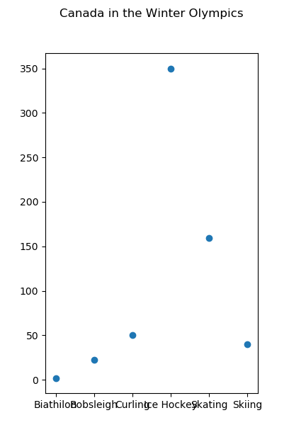
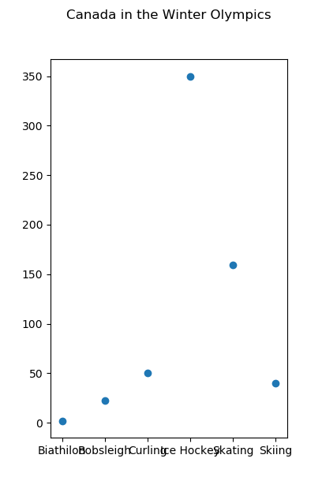
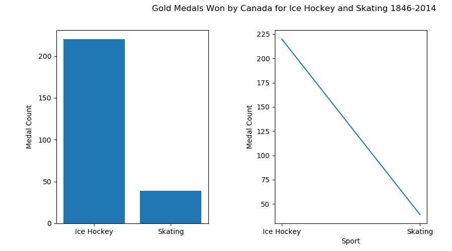

Canadas Best Sport
Data Visulizations to Determine Canadas Best Sport in the Winter Olympics
Medals Won Per Sport By Canada
Below are two graphs depicting the amalgamated medal count won by Canadian atheletes in the Winter Olympics between 1846-2014 in each sport. Each Graph represents the same data, simply displayed differently. It becomes clear fairly quickly which sports Canada excels at. Unsuprisingly, the sport with the greatest medal count is Hockey. Which truly does reinforce some stereotypes of Canadians(to no ones harm). When displaying this information, our bar graph on the left seems much more effective at quuickly demonstrating the vast differences between the winning medal counts of each sport. The scatter plot to the right does an acceptable job, but, fails to communicate the weight og Canadians Hockey glory.
 

Overall Medal Count For Hockey v.s Skating
Selected here are the two winter olympic sports in which Canada has won the overall highest overall medal count. The graphs show the individual medal counts - bronze, silver and gold - achieved by Candian atheletes in these two sports. (explain data shown in detail)

Hockey v.s Skating Gold Counts
(explain data shown in detail)
Canadas Exellence Examplified
(explain/restate findings and conclusions)